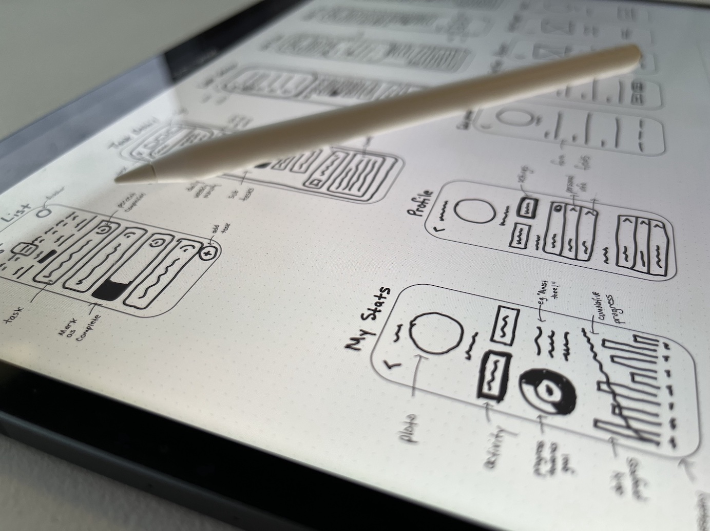
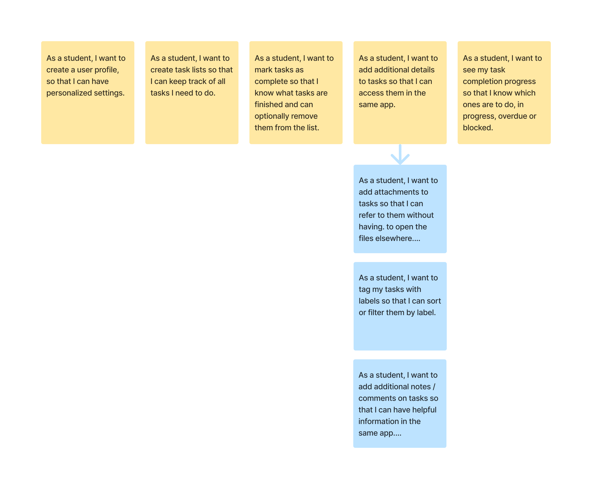
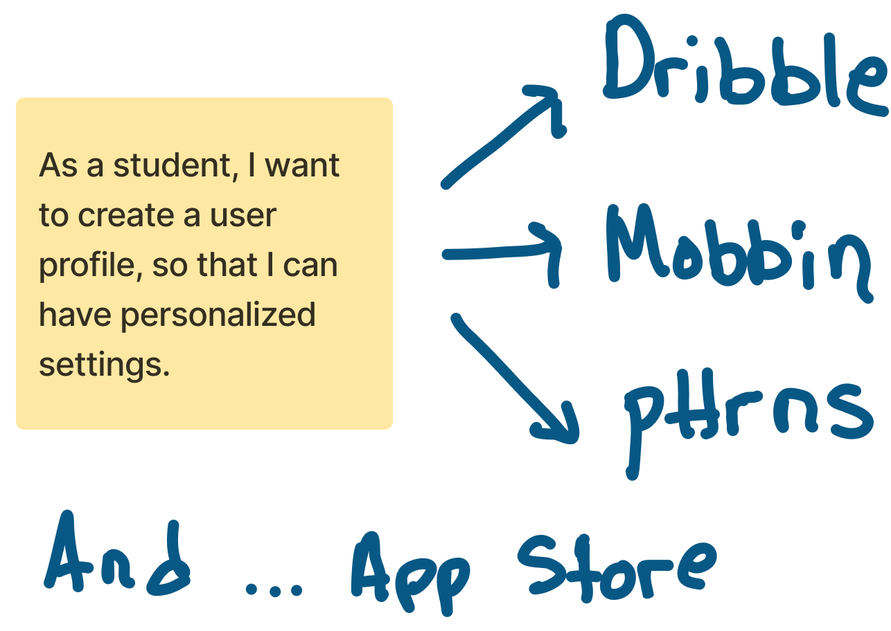
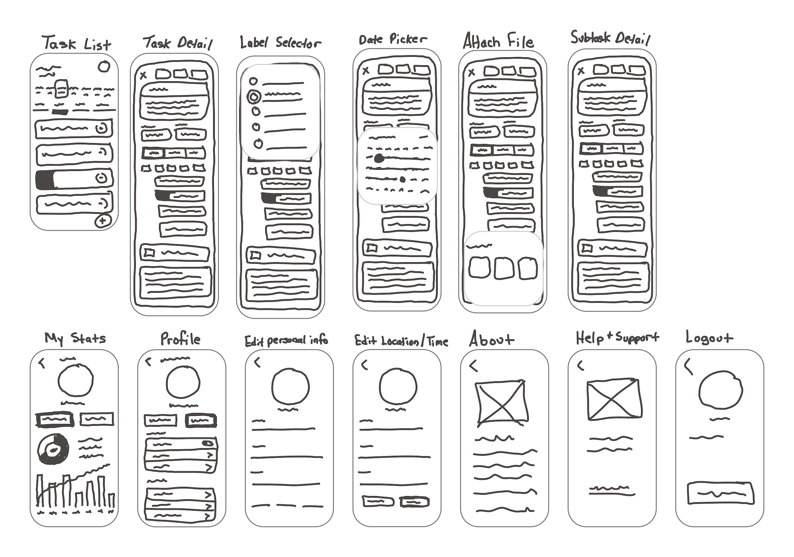
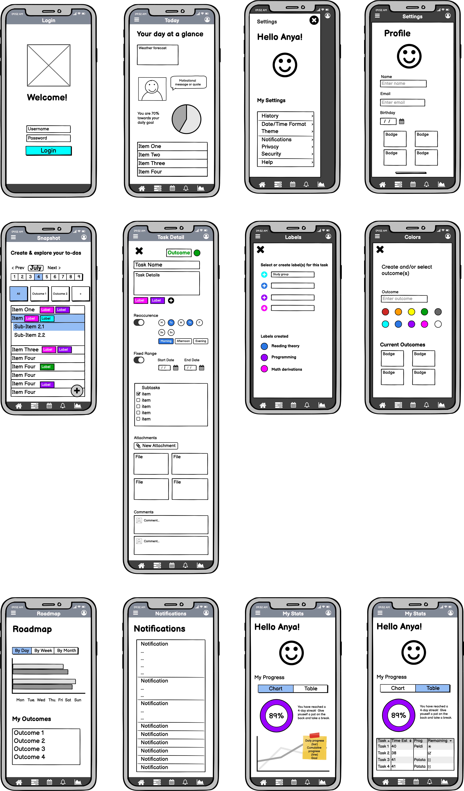
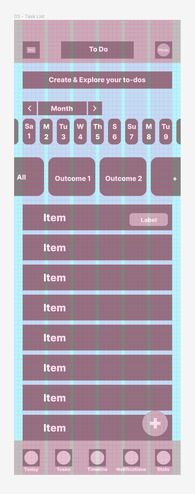
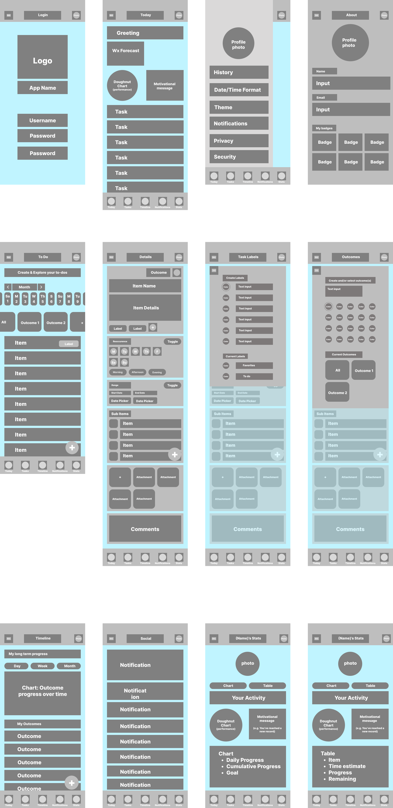
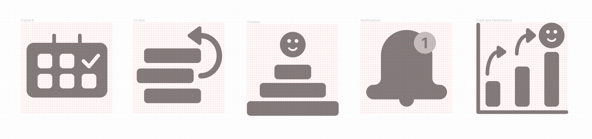
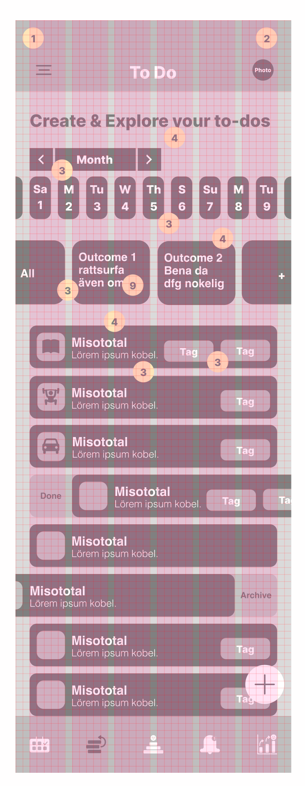
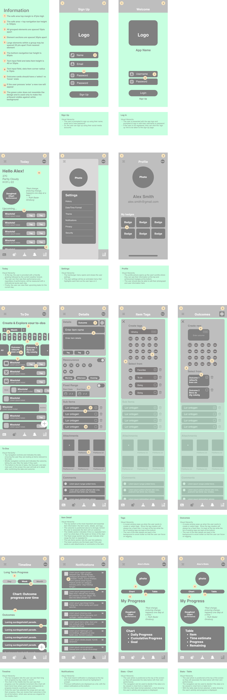

Productivity App (working progress...).
Introduction
I have just started designing a mobile version of a productivity app for 16 to 24 year olds who would like to keep their study plans and to-do lists in one place and manage them on the go.
UI Research
Analysis
I started by performing an analysis of current productivity apps and identifying the design pattern categories used. The most common categories I identified were
- gathering input - on the task name and additional details
- data management - to display task lists
- navigation - to access task status, days of the week or times of the day
User Stories
I then documented a list of user stories provided and generated new ones based on some light research with a few productivity app users. Ideation
For each user story, I performed a search on Dribble, Mobbin, pttrns and the App store for design patterns used to help achieve each user goal. Low-Fidelity Sketching
For each user story, and with inspiration from the design patterns on Dribble, pttrns and mobbin, I sketched the low fidelity screens in Figjam. Note: this particular design, intentionally, does not include the user flow.
Digital Low-Fidelity Wireframes
I used Balsamiq to design the low-fidelity digital wireframes and confirm the most basic flows.
Low-Fidelity Wireframes with grid
Grid System
I used a 10-pt grid with 6 columns and 20pt margins. My reason for selecting 10 points is because it is more efficient to work with figma. In figma one can use the shift key to move an element 10pts at a time.
Gray Boxing
The UI elements are drawn with simplified gray boxes of approximate size. The boxes are not the exact size but allowed me to validate the layouts with the grid system within a reasonable time.
Icon Design
Ideation and first sketches
I wanted to create custom icons for the bottom navigation and started the process by first identifying the purpose of each icon. I then quickly sketched three variations of each icon that I wanted to experiment with.
Icons drawn in Figma
The first digital version of icons still needs some work. The line thickness and corner radis used in the check marks, arrows and smilie faces are not as consistent as they should be in order to make the icon set feel like a family. UI Components
Adding UI components and readjusting to grid
Here I begin to add shape and realistic sizes to the UI elements while respecting the grid system. In addition, I am included some of the basic interactions required in order for the user to complete their tasks.
Basic UI components
I also introduce a generic set of icons and copy. At this stage, the icons have not been designed yet and I am using a set from the Figma plugin. This is the same case with the typography, where the final typeface and fonts have not been selected yet.
